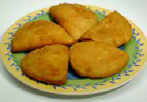
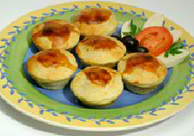
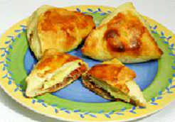

Coxinha is a popular food in Brazil consisting of chopped or shredded chicken meat, covered in dough, molded into
a shape resembling a drumstick, battered and fried.

BRAZILIAN RISOLE
Risoles are quite popular in Brazil. Brazilian risoles are like breaded empanadas. The dough is rolled out and filled, breaded, then deep-fried.

EMPADA
The empanadas in Brazil are different from those in other Latin american countries and are called empadas. They look more like mini pies.
PASTEL
Pastel is a Brazilian street food delicacy. It is typically deep-fried and although the dough used for this beloved food may resemble empanada dough in some ways, it's crispier and crunchier - more like a spring roll.

ESFIRRA
The Brazilian esfirra is one of the most popular and well-known snacks and/or fastfood items in Brazil, and millions are eaten every day.
KIBE
Kibe are football-shaped deep-fried croquettes of beef and bulgur wheat, seasoned with garlic, onions, mint, and cinnamon, and eaten as a snack in Brazil.